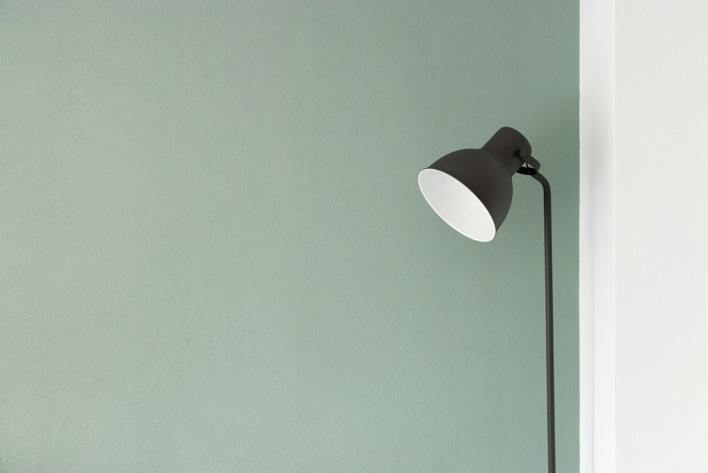

OBJEK PILIHAN, HARI-HARI LEBIH BAIK
Temukan hal kecil yang membuat beda.
Barang fungsional dengan desain yang dipikirkan matang. Dipilih untuk menemani ritme harianmu.
Jelajahi koleksi
DIRANCANGuntuk
digunakanSETIAP HARI
digunakanSETIAP HARI
PILIHAN KURASI · 2026
KATALOG LИX.GOODS
Barang yang tepat.
Memuat produk...
Belum ada produk pada kategori ini.